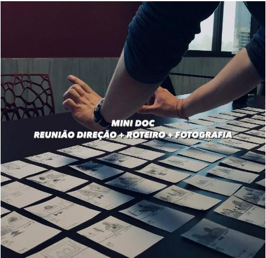

Este Mini Documentário do tipo Observativo tem como objetivo mostrar um pouco de um dia a dia de um estudante de cinema do primeiro semestre. O Documentário tem pequenos trechos mostrando um pouco as dificuldades e muitas das alegrias que é poder estar atuando nesta área, trabalhos em grupo, atividades, reuniões e ensaios para Curtas também fazem parte desta corrida rotina.